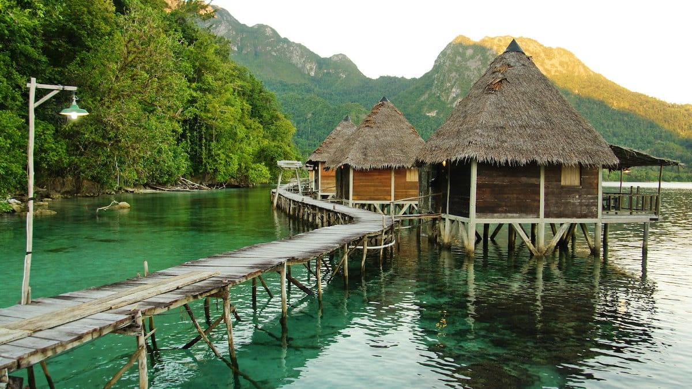
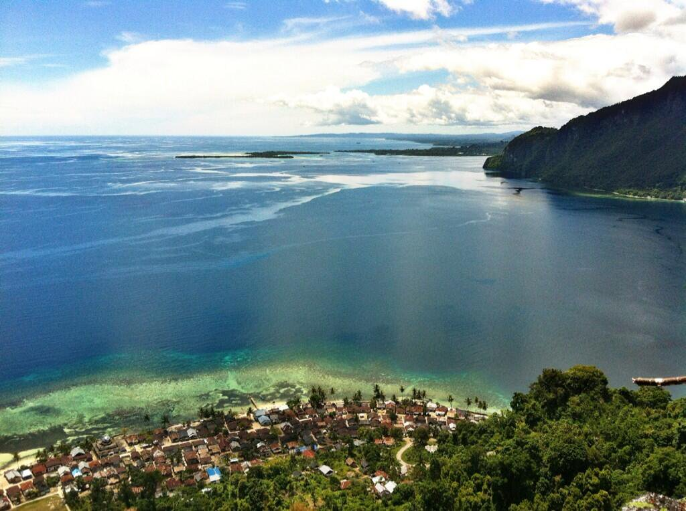
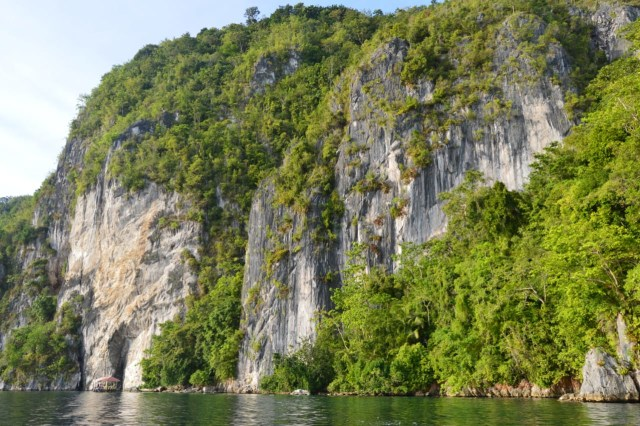
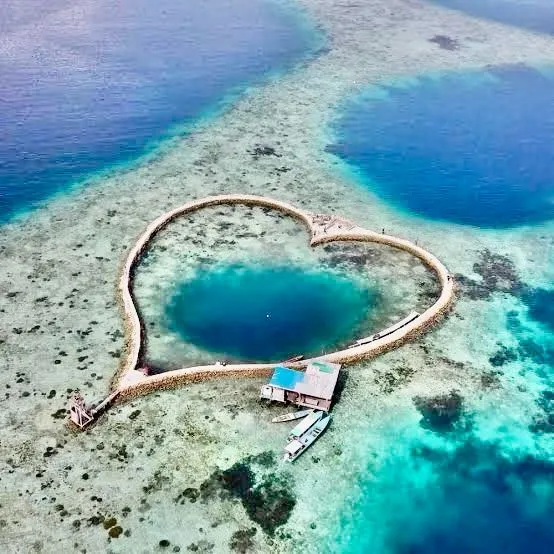

Selamat Datang di Negeri Saleman

Negeri Saleman adalah salah satu negeri di Seram Utara Barat, Kabupaten Maluku Tengah, Propinsi Maluku yang dianugerahi dengan segala kekayaan dan keindahan alam, keanekaragaman budaya, serta kehangatan masyarakatnya. Negeri ini menyajikan sebuah harmoni sempurna antara daratan dan lautan yang kaya akan terumbu karang. Desa Saleman berlokasi di perbukitan Hutan Nasional Manusela, jadi kawasan ini juga berbatasan langsung dengan salah satu taman nasional terbesar di Maluku.
INFORMASI NEGERI SALEMAN
Negeri Saleman memiliki berbagai informasi menarik yang dapat Anda eksplorasi. Mulai dari sejarah, budaya, hingga keindahan alamnya.
Daya Tarik Negeri Saleman
Beberapa daya tarik yang dapat Anda temukan di Negeri Saleman antara lain:
- Pantai Ora
- Tebing Hatupia
- Keramba Cinta
- Teluk Saleman
Aktivitas Menarik di Negeri Saleman
Di Negeri Saleman, Anda dapat menikmati berbagai aktivitas menarik, seperti:
- Snorkeling di Pantai Ora
- Jelajah Alam di Hutan Nasional Manusela
- Menikmati Sunset di Tebing Hatupia
- Berfoto di Keramba Cinta
Galeri Foto Negeri Saleman




Lokasi Negeri Saleman
Untuk menuju ke Desa Saleman, dapat melewati Bandara Internasional Pattimura menuju Kota Ambon, sampai tiba di Pelabuhan Liang yang ditempuh selama 3,5 jam, lalu menyeberang dengan kapal ferry menuju Pelabuhan Waipirit selama 1,5 jam, sebelum melanjutkan perjalanan darat ke Saleman.
Tabel Informasi Negeri Saleman
| Informasi | Detail |
|---|---|
| Nama Destinasi | Negeri Saleman |
| Jenis Wisata | Wisata Alam dan Bahari |
| Lokasi | Desa Saleman, Kecamatan Seram Utara Barat, Kabupaten Maluku Tengah, Propinsi Maluku |
| Daya Tarik | Pantai Ora, Tebing Hatupia, Keramba Cinta, Teluk Saleman |
| Aktivitas | Snorkeling, Jelajah Alam, Diving, Menikmati Sunset, Berfoto, Kuliner |
| Fasilitas | Penginapan, Restoran, Pusat Informasi Wisata |
Formulir Kunjungan
Kontak Kami
Jika Anda memiliki pertanyaan atau ingin melakukan pemesanan, silakan hubungi kami melalui:
- Email: melmel@gmail.com
- Telepon: +62 123 456 789
Video Negeri Saleman
Video ini menampilkan keindahan alam dan wisata di Negeri Saleman.